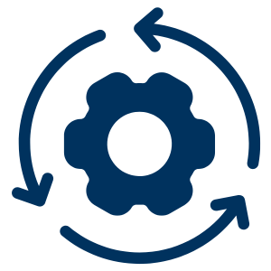

Portafolio de proyecto de mejora de línea de producción de bebidas carbonatadas
Ver Proyecto →Nuestras áreas de especialización como empresa
Identificamos y eliminamos ineficiencias en líneas productivas.
Modelamos sistemas productivos con herramientas digitales.
Evaluamos indicadores clave para mejorar el rendimiento.
Diagnóstico inicial
Modelado preliminar
Propuesta inicial

Simulación
Propuesta integral
Análisis final
Navega a través de nuestro proceso: